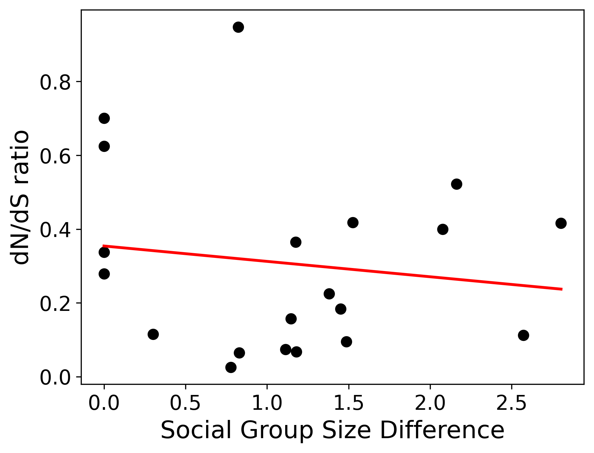
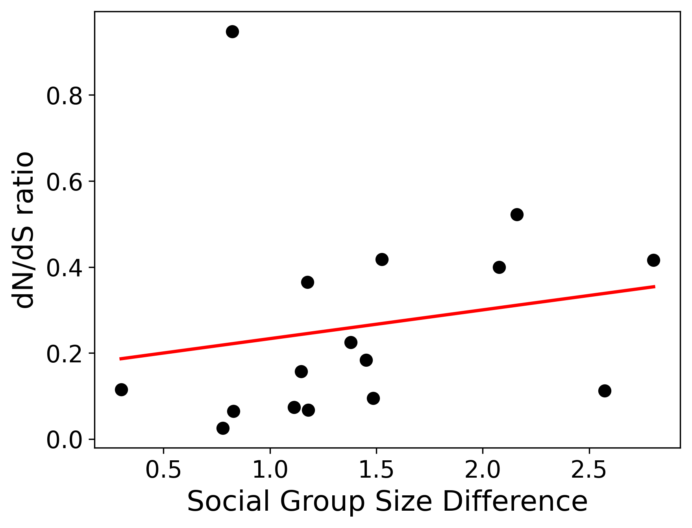
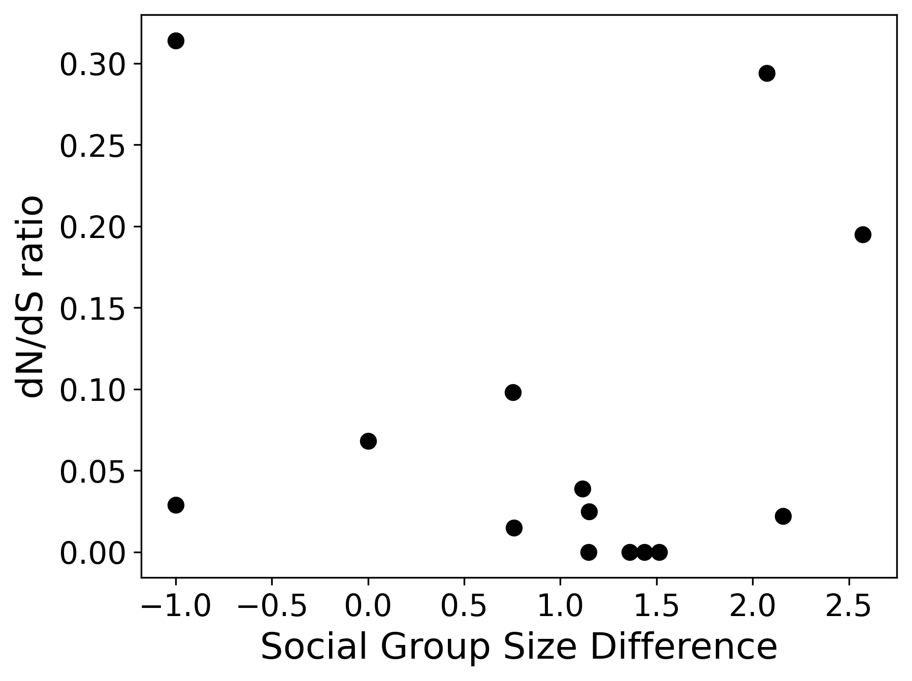

Bioinformatics
Bioinformatics is the application of tools of computation and analysis to the capture and interpretation of biological data. We get to use data science techniques to analyze biological data, such as DNA. I took a Bioinformatics course during my last quarter of college (CSS 383). We learned how to read biology research papers, use bioinformatics libraries in Python, and had a quarter-long project to complete. The class combined both computer science and biology majors, so it was very interesting to be able to work side-by-side with biologists. My group ended up having 1 other computer science student and 2 biology students. We helped them with the coding portions and they helped us with the biology research, then we worked together to complete the project.
Our Project
The title of our research was “Dopamine Evolution Impacts on Social Group Sizes”. The question we were trying to solve was “How does the evolution of dopamine receptor proteins correlate with changes in social group size in mammals?” We thought that since because humans and other mammals release dopamine when we are around others in our species, there would be a correlation between dopamine evolution and social group sizes.
Data and Methods
The National Institutes of Health (NIH) has thousands of genomes sequenced for free use by the community. They have entire DNA sequences and separate out the different genes; dopamine receptors being one of these genes.
To do our research and analysis, we needed pairs of mammals of the same genus and their DNA. With each pair of mammals, we needed to see the evolutionary differences between them. To calculate this difference, there is an equation called the dN/dS ratio. It lets us assign a value to how much each sequence diverges evolutionarily. This dN/dS ratio is determined by finding where the species share dopamine genes, aligning the gene sequences (bases can be lost or gained over evolution, but stay in the same place), calculating the dN/dS ratio for each conon (3 DNA bases/letters), then we create an aggregate score for each pair of genes. This is all done in Python using a combination of our own code and Python libraries for bioinformatics.
Finally, we plotted the social group size difference vs. the dN/dS ratio for each pair of species. If there was a correlation between the two, we would see it in the graph. We also used the ACTN3 as a control, which is a muscle gene.
The second part of our work was to research the social group sizes of each species. There is no master list with this information, so we had to scour the internet for research papers with this information.
Results
Unfortunately, our results did not show a statistically significant correlation between the evolution of dopamine receptors and social group size. This is sadly a common occurrence in the world of biology and bioinformatics. Tons of time and money can be spent on research just to get inconclusive results or results against your hypothesis. However, this is part of the scientific process that leads to some great discoveries. Here are the charts with our results:
| Dopamine Genes | Removed Zeros | Control (ACTN3) |
|---|---|---|
|  |  |  |